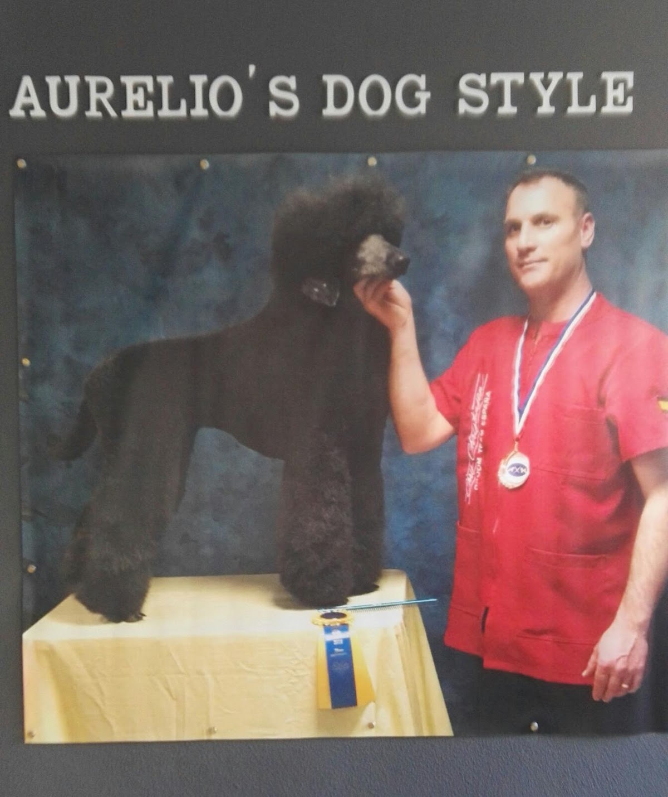
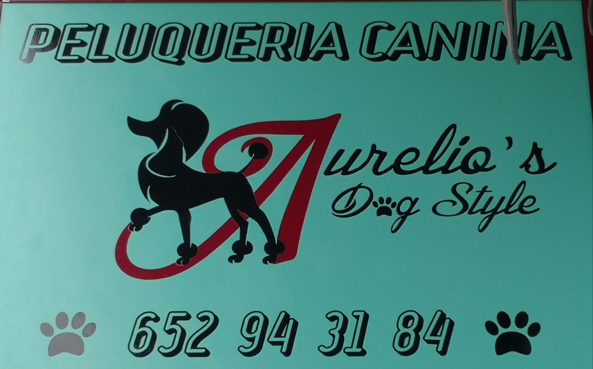
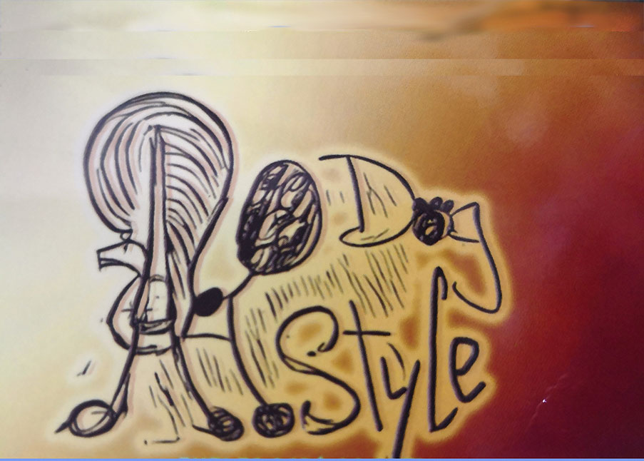

Cortes hechos con calma y a conciencia — hasta las patitas, esa zona que en otros sitios queda a medias. Cosmética de calidad y, sobre todo, mucho cariño con tu perro. 🐾

recién salido ✨Aquí no entras, te cortan y a la calle. Aurelio trabaja a conciencia cada zona — incluidas las patitas, que es justo donde otras peluquerías se descuidan. Tu perro sale guapo de verdad, de la cabeza a la cola.
Y no es solo estética: se cuida la piel y el manto de cada perro, con cosmética de calidad y sesiones pensadas para mantenerlo sano entre visita y visita. Tú lo dejas en buenas manos y lo recoges hecho una princesa.
No hay dos mantos iguales. Por eso adaptamos el baño, el corte y los cuidados a tu perro — sin prisas y sin forzar.
Lavado con cosmética de calidad y un secado cuidadoso. Se nota en el acabado: pelo suave, brillante y limpio de verdad.
Desde el caniche al pomerania: el corte que le va a tu perro, hecho a conciencia hasta las patitas. Sale guapo y reconocible.
Si tu perro tiene la piel delicada, lo tratamos con sesiones y productos pensados para su tipo de manto. Confort antes que postureo.
Baño una vez al mes y un repaso semanal para que tu perro esté siempre impecable, sin que la cosa se acumule. Tú despreocúpate.
Lo que repiten las familias del barrio, una y otra vez. 🐾
Se nota que es un trabajo hecho con mucho cariño. Tu perro entra tranquilo y sale contento — no estresado.
Hasta las patitas, esa zona que se ve descuidada en otros sitios. Aquí el acabado está cuidado de arriba abajo.
45 familias lo recomiendan en Google con un 4,8 sobre 5. Resultado de princesa a un precio que sorprende.
En Carrer d'Emili Baró, muy cerca de casa. Por fin una peluquería de confianza en el barrio.
Fotos reales del día a día en la peluquería. Sin filtros: así salen los perros de aquí.

Recién peluqueado
Acabado cuidado★★★★★ 4,8 / 5 · 45 reseñas reales en Google
"He dejado a mi perrita en plan muy hippie y tras 2 horas la recogí hecha una auténtica princesa. ¡Y contenta además! De precio fenomenal. Por fin hemos encontrado nuestra peluquería, y muy cerca de casa. ¡Gracias Aurelio!"
"Se nota que es un trabajo que se hace con mucho cariño. Además, el corte se hace de manera muy concienzuda, hasta las patitas, que es una zona que he visto descuidada en otros lugares. Sin duda un lugar a donde llevar a tu perrito."
"Aurelio es estupendo, además de un gran profesional. Nuestro caniche va feliz y sale precioso cada vez. Ofrece opción de lavar una vez al mes y, después, una vez a la semana llevarlo para mantenimiento. El resultado es buenísimo."
"Muy buen trato a mi mascota, utilizan cosmética de calidad… se nota en el acabado. Se preocupa en tratar problemas de piel y realiza sesiones y cuidados en cualquier tipo de manto. Totalmente recomendado."
"¡Impresionada! Mi perrita estaba guapísima con un corte precioso de pomerania. Gran profesional. Sin duda en las mejores manos. ¡Lo súper recomiendo!"
Lo más fácil es escribirnos por WhatsApp al 652 94 31 84. Nos cuentas qué perro tienes y qué necesita, y te damos hueco lo antes posible.
Sí. Desde caniches y pomeranias hasta cualquier tipo de manto. Adaptamos el baño y el corte a tu perro, y cuidamos especialmente la piel si la tiene delicada.
Sí. Una opción muy demandada es un baño completo una vez al mes y un repaso semanal de mantenimiento, para que tu perro esté siempre impecable sin acumular suciedad ni nudos.
En Carrer d'Emili Baró, 82, en el barrio de Benimaclet, 46020 València. Muy cerca si vives por la zona — muchas familias del barrio ya son clientas.
Escríbenos por WhatsApp y reserva su sesión. Lo dejas hecho un manojo de nudos y lo recoges hecho una princesa. 🐾
Escríbenos por WhatsApp